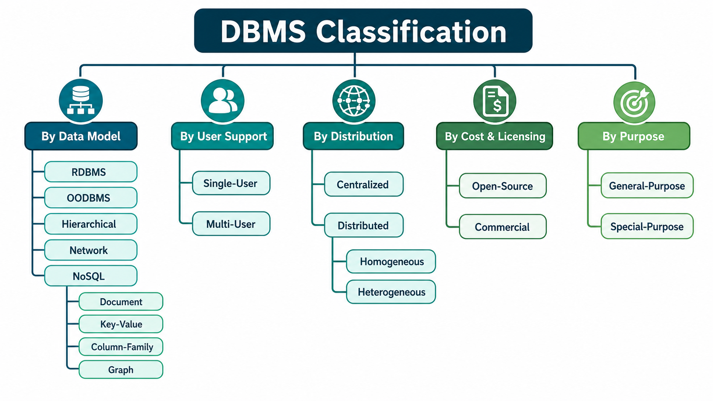

Excellent! This chapter is mostly theory + examples, and IBPS SO IT asks direct questions from it.
Typical questions are:
- Which DBMS stores data in tables?
- Which DBMS stores data as objects?
- Which DBMS uses a tree structure?
- Difference between Relational and NoSQL?
- Difference between Centralized and Distributed DBMS?
- Single-user vs Multi-user?
- Open-source vs Commercial?
I'll explain every classification in the easiest possible way.
DBMS - Classification
What is Classification?
Classification simply means
Grouping databases based on different characteristics.
Just like we classify vehicles as:
Vehicles
├── Two Wheeler
├── Four Wheeler
└── Heavy VehicleSimilarly, DBMS is classified based on:
- Data Model
- Number of Users
- Distribution
- Cost
- Purpose

1. Classification by Data Model
This is the most important classification.
Question:
How is data stored?
There are 5 major types.
1. Relational DBMS (RDBMS)
⭐⭐⭐⭐⭐ Very Important
How does it store data?
In tables.
Example
Student Table
| ID | Name | Age |
|---|---|---|
| 1 | Rahul | 20 |
| 2 | Aman | 21 |
Everything is stored in rows and columns.
Why is it called "Relational"?
Because tables are connected using Keys.
Example
Student Table
| StudentID | Name |
|---|---|
| 101 | Rahul |
Course Table
| CourseID | StudentID |
|---|---|
| DBMS | 101 |
StudentID connects both tables.
That relationship is called a Relation.
Features
✔ Table-based
✔ Uses SQL
✔ Supports Normalization
✔ Supports ACID
✔ Uses Primary Key and Foreign Key
Examples
- MySQL
- Oracle
- SQL Server
- PostgreSQL
Where is it used?
- Banking
- Hospitals
- Colleges
- Railway Reservation
Almost every traditional business application.
Easy Trick
RDBMS = Rows + Columns
2. Object-Oriented DBMS (OODBMS)
⭐⭐⭐
How does it store data?
As Objects.
Just like Java or C++.
Example
In Java
class Student{
int id;
String name;
}Instead of converting this into tables,
the database stores the Student object directly.
Why?
Because some applications have
very complex objects.
Example
A Car object
Car
↓
Engine
↓
Tyres
↓
SensorsNested objects.
OODBMS stores these naturally.
Features
✔ Stores Objects
✔ Supports OOP Concepts
✔ Handles Complex Data
Example
db4o
Used In
- CAD Software
- Scientific Applications
- Multimedia Systems
Easy Trick
OODBMS = Objects
3. Hierarchical DBMS
⭐⭐⭐⭐⭐
Very common in exams.
How does it store data?
Like a Tree.
Example
Company
│
├── HR
│ ├── Employee 1
│ └── Employee 2
│
└── IT
├── Employee 3
└── Employee 4One Parent
↓
Many Children
Rule
Each child has
only one parent.
Examples
IBM IMS
Real-Life Example
Family Tree
Grandfather
↓
Father
↓
SonEasy Trick
Hierarchical = Tree
4. Network DBMS
⭐⭐⭐⭐
Very Important
Difference from Hierarchical
Hierarchical
One Parent.
Network
Multiple Parents.
Example
Student
can study
multiple courses.
Course
has
multiple students.
Diagram
Student A
\
\
Course 1
/
Student BMany-to-Many.
Features
✔ Web-like Structure
✔ Multiple Parents
✔ Complex Relationships
Example
IDMS
Used In
Supply Chain
Telecom
Manufacturing
Easy Trick
Network = Web
Difference
Hierarchical
Parent
↓
ChildOnly one parent.
Network
Parent A
\
Child
/
Parent BMultiple parents.
5. NoSQL DBMS
⭐⭐⭐⭐⭐
One of the hottest topics.
What is NoSQL?
Means
Not Only SQL
NoSQL databases don't always use tables.
They are made for
Huge Data
Flexible Data
Unstructured Data
Why invented?
Imagine Instagram.
Every user
has different information.
Some have
Bio
Some don't.
Some have
1000 followers.
Some have
5 million followers.
Rigid tables become difficult.
NoSQL solves this.
Types of NoSQL
There are 4 types.
A. Document Database
Stores
Documents.
Usually
JSON.
Example
{
"name":"Rahul",
"age":20,
"city":"Delhi"
}Example
MongoDB
Used In
Content Management
Blogs
E-commerce
B. Key-Value Store
Simplest database.
Everything stored as
Key
↓
Value
Example
101
↓
RahulExample
Redis
Used In
Caching
Session Storage
Gaming
C. Column-Family Database
Instead of storing by rows,
stores by columns.
Useful for
Big Data
Analytics
Example
Cassandra
D. Graph Database
Stores
Nodes
and
Relationships.
Example
Facebook.
Person
↓
Friend
↓
Friend
↓
Friend
Graph.
Example
Neo4j
Used In
Social Networks
Recommendation Systems
Maps
NoSQL Summary
| Type | Example |
|---|---|
| Document | MongoDB |
| Key-Value | Redis |
| Column Family | Cassandra |
| Graph | Neo4j |
Classification by User Support
Question
How many users can use the database?
Single-User DBMS
Only
One user
at a time.
Example
SQLite
Mobile Apps
Personal Projects
Example
Your phone's Notes App.
Only you use it.
Multi-User DBMS
Many users
simultaneously.
Example
PostgreSQL
Oracle
MySQL
SQL Server
Example
Bank
Thousands of customers
using ATM
together.
Difference
| Single User | Multi User |
|---|---|
| One User | Many Users |
| Personal | Enterprise |
| SQLite | Oracle, MySQL |
Classification by Distribution
Question
Where is data stored?
Centralized DBMS
One location.
Diagram
Users
↓
One ServerExample
University Database.
One central server.
Advantages
Easy Security
Easy Maintenance
Disadvantages
Single Point of Failure.
Distributed DBMS (DDBMS)
⭐⭐⭐⭐⭐
Data stored
at multiple locations.
Example
Delhi Server
Mumbai Server
Patna Server
↓
ConnectedAll together
appear as
one database.
Example
Amazon DynamoDB
Used In
Global Companies
Online Banking
Cloud Systems
Types of Distributed DBMS
Homogeneous DDBMS
All locations
use same DBMS.
Example
Every branch uses
MySQL.
Heterogeneous DDBMS
Different branches
use different DBMS.
Example
Delhi
Oracle
Mumbai
MySQL
Patna
SQL Server
Middleware
connects everything.
Easy Trick
Homogeneous
↓
Same
Heterogeneous
↓
Different
Classification by Cost
Open Source DBMS
Free.
Source code available.
Examples
MySQL
PostgreSQL
MariaDB
SQLite
Advantages
Free
Flexible
Community Support
Commercial DBMS
Paid.
Examples
Oracle Database
IBM Db2
Microsoft SQL Server (Enterprise editions)
Advantages
Professional Support
Better Enterprise Features
Difference
| Open Source | Commercial |
|---|---|
| Free | Paid |
| Community Support | Official Support |
| MySQL | Oracle |
Classification by Purpose
General Purpose DBMS
Can do
almost everything.
Examples
SQL Server
Oracle
MySQL
Used for
Banking
Hospital
Schools
ERP
Special Purpose DBMS
Designed
for
one special task.
Example
Telecommunication
Real-time Systems
Streaming Systems
Example
Call Recording Database
Only optimized
for telecom.
Summary Table
By Data Model
| Type | Stores Data As | Example |
|---|---|---|
| Relational | Tables | MySQL, Oracle, PostgreSQL |
| Object-Oriented | Objects | db4o |
| Hierarchical | Tree | IBM IMS |
| Network | Web/Graph of records (multiple parent-child links) | IDMS |
| NoSQL | Flexible (Document, Key-Value, Column, Graph) | MongoDB, Redis, Cassandra, Neo4j |
Note: Although a Network DBMS looks like a graph, it is different from a NoSQL Graph Database. A Network DBMS is an older database model based on records and pointers, while a Graph Database (like Neo4j) is a modern NoSQL database optimized for nodes and relationships.
By User Support
| Type | Example |
|---|---|
| Single User | SQLite |
| Multi User | PostgreSQL, Oracle |
By Distribution
| Type | Data Stored |
|---|---|
| Centralized | One Location |
| Distributed | Multiple Locations |
Distributed Types
| Type | Meaning |
|---|---|
| Homogeneous | Same DBMS everywhere |
| Heterogeneous | Different DBMSs connected through middleware |
By Cost
| Type | Example |
|---|---|
| Open Source | MySQL, PostgreSQL |
| Commercial | Oracle Database |
By Purpose
| Type | Example |
|---|---|
| General Purpose | SQL Server, Oracle |
| Special Purpose | Telecom DBMS, Real-Time DBMS |
⭐ IBPS SO IT Quick Revision
| Topic | Remember |
|---|---|
| RDBMS | Tables (Rows & Columns), SQL, Keys |
| OODBMS | Objects |
| Hierarchical DBMS | Tree Structure (One Parent → Many Children) |
| Network DBMS | Web Structure (Many-to-Many Relationships) |
| NoSQL | Flexible schema for unstructured/semi-structured data |
| Document DB | MongoDB |
| Key-Value DB | Redis |
| Column-Family DB | Cassandra |
| Graph DB | Neo4j |
| Single User | SQLite |
| Multi User | PostgreSQL, Oracle, MySQL |
| Centralized DBMS | One Server |
| Distributed DBMS | Multiple Servers |
| Homogeneous DDBMS | Same DBMS Software |
| Heterogeneous DDBMS | Different DBMS Software |
| Open Source | Free (MySQL, PostgreSQL) |
| Commercial | Paid (Oracle Database) |
| General Purpose | Multiple applications |
| Special Purpose | One specific application |
🎯 IBPS SO IT Frequently Asked Questions
Q1. Which DBMS stores data in tables?
✅ Relational DBMS (RDBMS)
Q2. Which DBMS stores data as objects?
✅ Object-Oriented DBMS (OODBMS)
Q3. Which DBMS organizes data like a tree?
✅ Hierarchical DBMS
Q4. Which DBMS supports multiple parent-child relationships?
✅ Network DBMS
Q5. Which NoSQL database stores JSON-like documents?
✅ MongoDB
Q6. Which NoSQL database is a Key-Value store?
✅ Redis
Q7. Which NoSQL database is a Column-Family store?
✅ Cassandra
Q8. Which NoSQL database is designed for relationship-heavy data?
✅ Neo4j
Q9. What is the difference between Homogeneous and Heterogeneous DDBMS?
- ✅ Homogeneous: All sites use the same DBMS software.
- ✅ Heterogeneous: Different sites may use different DBMS software, connected through middleware.
Q10. Give one example each of an Open-Source and a Commercial DBMS.
- ✅ Open-Source: MySQL, PostgreSQL
- ✅ Commercial: Oracle Database
🧠 Final Memory Trick
Think of the data models like this:
Flat (Old)
↓
Hierarchical
(Tree)
↓
Network
(Web)
↓
Relational
(Tables)
↓
Object-Oriented
(Objects)
↓
NoSQL
(Flexible Data)For IBPS SO IT, if you remember the storage model + one example for each DBMS type, you'll be able to answer most classification-based questions quickly.